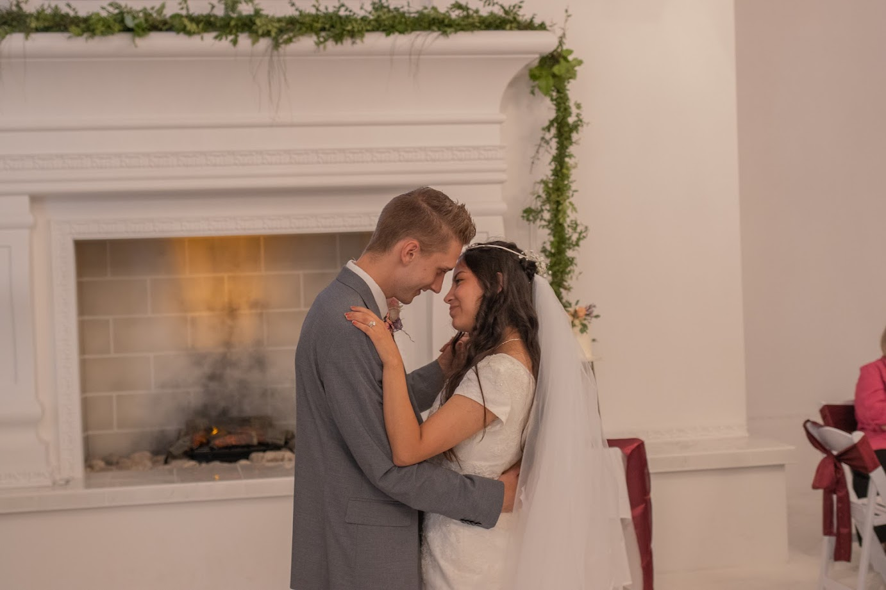
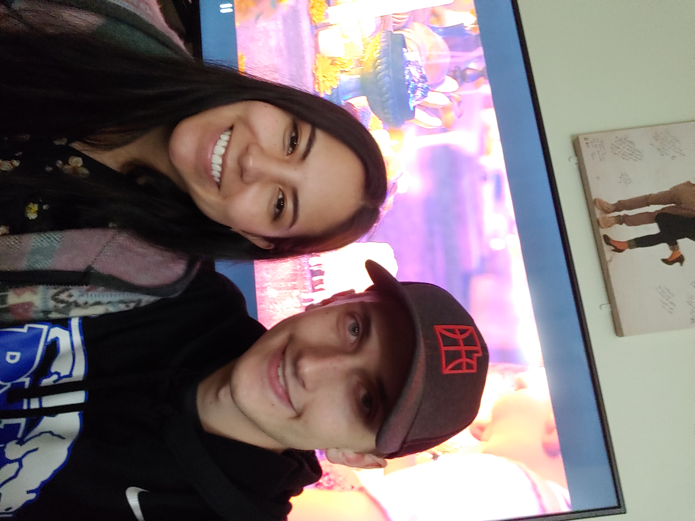
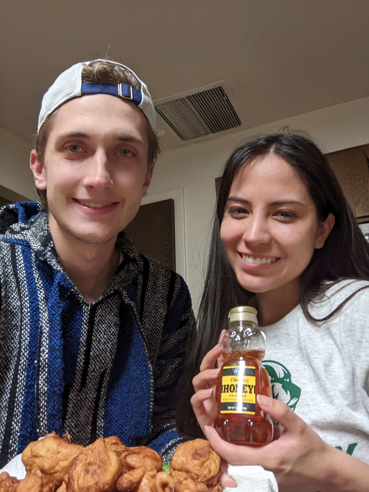

Portafolio Cultural
de Karson Ballard
Actividades Culturales
ACTIVIDAD 1
Para mi actividad cultural, fui a mi propio matrimonio. Mi esposa es de Ecuador y tuve la oportunidad de hablar con su familia en Español. También añadimos muchas cosas típicas de Ecuador en nuestra fiesta. Por ejemplo, tuvimos una mesa de comida típica de Ecuador. Algo nuevo que nunca he probado antes era el Cevichocho. El Cevichocho es un plato compuesto por tomate, limón, pepino, y un tipo de frijol que se llama chocho. El chocho crece en el clima cálido y húmedo de Ecuador. Después de comer, bailamos bachata, salsa y reggaetón. Mi esposa y yo nos divertimos mucho. Mi suegra trajo algunos objetos de Ecuador como regalos. Trajo ajedrez pintado a mano y unas chamarras de lana de alpaca. Mi matrimonio Ecuatoriano fue una experiencia inolvidable.
ACTIVIDAD 2
Para mi segunda actividad cultural este semestre. Vi la película Coco en español. Algo que me llamó la atención fue la importancia de la familia en la cultura hispana. Cada año los Mexicanos tienen un día dedicado para celebrar a sus antepasados que ya fallecieron. Me gusta la idea de que los antepasados están involucrados en las vidas de sus descendientes. Yo también creo que mis antepasados me conocen. Mi esposa dice que en Ecuador tienen el día de los difuntos cuando hacen una bebida que se llama colada morada y preparan un pan en forma de muñeca. Ese día también visitan los tumbos de sus antepasados. De esta manera me di cuenta que la familia es una parte importante de la cultura aunque en los otros países latinos la celebran de otras maneras.
ACTIVIDAD 3
Para mi tercera actividad cultural, cociné buñuelos con mi esposa. Un buñuelo es un pan dulce frito hecho con harina, huevo, azúcar, vainilla y polvo para hornear. Son similares a los “scones” que tenemos en los Estados Unidos pero son más suaves y gruesos. Es un postre español y tiene raíces entre los Judíos de España. Por eso se hacen buñuelos por Navidad o Hanukkah. Nunca he probado los buñuelos antes pero me gustaron mucho. Se come con miel, jarabe, o azúcar glas.